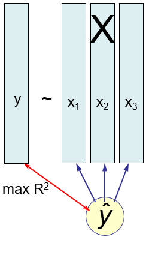

Although this book is primarily about multivariate models, it is useful to have an overview of the range of available techniques to see their relations and to appreciate how easily univariate response models generalize to multivariate ones. Hence, this chapter reviews the characteristics of the standard univariate methods for explaining or predicting a single outcome variable from a set of predictors.
The key ideas are:
For a single quantitative outcome variable \(\mathbf{y}\), methods of linear regression and analysis of variance (ANOVA) are comprised within a single framework of the general linear model (GLM). Regression and ANOVA differ only in that the predictors in the former are quantitative, while those in the latter are discrete factors. They can all be fit using
lm().These models extend directly to the multivariate case of \(q > 1\) outcomes, \(\mathbf{Y} = (\mathbf{y}_1, \mathbf{y}_2, \dots \mathbf{y}_q)\), and are also fit using
lm().A binary outcome \(y = (0, 1)\) and categorical outcomes like marital status (“never married”, “married”, “separated”, “divorced”) can be handled within a different extension, the generalized linear model as logistic regression or multinomial regression, fit using
glm().All of these models involve linear combinations of predictors (weighted sums) fit to optimize some criterion, for example minimizing some function of the residuals or maximizing some measure of fit.
Models and data can be more easily understood with graphics, and many statistical ideas have a visual representation in geometry.
Figure 5.1 summarizes a variety of methods for linear models, classified by number of predictors and number of response variables, and whether these are quantitative vs. discrete. For the present purposes, the key columns are the first two, for the case of one or more quantitative outcome variables.
when the predictors are also quantitative, simple regression (\(p=1\)) generalizes to multivariate regression with two or more outcomes, for example predicting weight and body mass index jointly from a person’s height. The situation is more interesting when there are \(p>1\) predictors. The most common multivariate generalization is multivariate multiple regression (MMRA), where each outcome is regressed on the predictors, as if done separately for each outcome, but using multivariate tests that take correlations among the predictors into account. Other methods for this case include canonical correlation analysis, which tries to explain all relations between \(\mathbf{Y}\) and a set of \(\mathbf{x}\)s through maximally correlated linear combinations of each.
When the predictor variables are all categorical, like gender or level of education, methods like the simple \(t\)-test, one-way ANOVA and factorial ANOVA with \(q=1\) outcome measures all have simple extensions to the case of \(q>1\) outcomes.
Not shown in Figure 5.1 are rows for cases where predictor variables include a mixture quantitative and discrete factors.
**Analysis of covariance* (ANCOVA) is the term for models where the main emphasis on on comparing means of different groups, but where there are one or more quantitative predictors (for example a pre-test score on the outcome variable) that need to be taken into account, so we can assess the differences among groups controlling or adjusting for those predictors, which are called covariates.
Homogeneity of regression treats the same type of data, but the main interest is on the regression relation between \(\mathbf{y}\) and a set of quantitative \(\mathbf{x}\)s, but there is also one or more grouping factors. In this case, we want to determine if the same regression relation applies in all groups or whether the groups differ in their intercepts and/or slopes. Another term for this class of questions is moderator effects, which refers to interactions between the quantitative predictors and group factors.
:::{.callout-note title = “History Corner”}
Why are there so many different names for regression vs. ANOVA concepts, statistics and techniques? In regression, we use notation like \(x_1, x_2, ...\) to refer to predictors in a model, while in ANOVA, factors \(A, B, ...\) are called main effects. In regression applications, we often test linear hypotheses, are interested in coefficients and evaluate a model with and \(R^2\) statistic, while in ANOVA we may test contrasts among factor levels, and use \(F\)-tests to evaluate models.
Well, like twins separated at birth, they grew up in homes in different places and with different parents.
Methods of regression began with Francis Galton’s (1886, 1889) studies of heritability of traits, trying to understand how strongly the physical characteristics of one generation of living things resembled those in the next generation. From a study of the diameters of sweet peas in parent plants and their size in the next generation, and another on the relationship between heights of human parents and their offspring, he developed the fundamental ideas of regression. Karl Pearson (1896)
Analysis of variance methods were raised on farms, notably the Rothamsted Experimental Station, where R. A. Fisher analyzed vast amounts of data on crop experiments designed to determine the conditions (soil condition, fertilizer treatments) that gave the greatest yields, while controlling for extraneous determiners (plots of planting). With multiple factors determining the outcome, Fisher (1923), in an experiment on yields of different varieties of potatoes given various manure treatments, devised the method of breaking down the total variance into portions attributable to each factor and presented the first ANOVA table. The method became well-known after Fisher’s (1925) Statistical Methods for Research Workers.
The great synthesis of regression and ANOVA did not take place until the 1960s … Graybill, Winer, Bock … -> Symposium 1967
Birth of the general linear models : https://files.eric.ed.gov/fulltext/ED026737.pdf
:::
5.1 Linear combinations
All methods of multivariate statistics involve a simple idea: Finding weighted sums—linear combinations— of observed variables to optimize some criterion—maximizing a measure of goodness-of-fit, like \(R^2\) or minimizing a measure of badness-of-fit like sums of squares of residuals. Methods differ according to whether:
All variables belong to one set (say, \(\mathbf{X}\)), not distinguished as to whether they are responses or predictors, as in PCA and factor analysis, vs. two sets where one set is considered outcome, dependent variables, to be explained by predictors, independent variables (\(\mathbf{X}\)), as in multiple regression, multivariate analysis of variance, discriminant analysis and canonical correlation analysis.
The variables in \(\mathbf{X}\) and \(\mathbf{Y}\) are discrete, categorical factors like sex and level of education or quantitative variables like salary and number of years of experience.
For example, Figure 5.2 illustrates PCA (as we saw in Chapter 4) as finding weights to maximize the variance of linear combinations, \(v_1, v_2, ...\), \[\begin{eqnarray*} \mathbf{v}_1 & = & a_1 \mathbf{x}_1 + a_2 \mathbf{x}_2 + a_3 \mathbf{x}_3 + a_4 \mathbf{x}_4 \\ \mathbf{v}_2 & = & b_1 \mathbf{x}_1 + b_2 \mathbf{x}_2 + b_3 \mathbf{x}_3 + b_4 \mathbf{x}_4 \\ \dots & \dots \; , \\ \end{eqnarray*}\]
subject to all \(\mathbf{v}_i, \mathbf{v}_j\) being uncorrelated, \(\mathbf{v}_i \;\perp\; \mathbf{v}_j\).

5.1.1 Multiple regression

5.1.2 Multivariate regression

5.1.3 Canonical correlation analysis
5.1.4 The General Linear Model
To establish notation and terminology, it is worthwhile to state the the general linear model formally. For convenience, I use vector and matrix notation. This expresses a response variable, \(\mathbf{y} = (y_1, y_2, \dots , y_n)^\textsf{T}\) for \(n\) observations, as a sum of terms involving \(p\) regressors, \(\mathbf{x}_1, \mathbf{x}_2, \dots , \mathbf{x}_p\), each of length \(n\).
\[ \begin{align*} \mathbf{y} & = \beta_0 + \beta_1 \mathbf{x}_1 + \beta_2 \mathbf{x}_2 + \cdots + \beta_p \mathbf{x}_p + \mathbf{\epsilon} \\ & = \left[ \mathbf{1},\; \mathbf{x}_1,\; \mathbf{x}_2,\; \dots ,\; \mathbf{x}_p \right] \; \boldsymbol{\beta} + \boldsymbol{\epsilon} \\ & = \mathbf{X}_{n \times (p+1)}\; \boldsymbol{\beta}_{(p+1) \times 1} + \boldsymbol{\epsilon} \end{align*} \]
\[ \begin{align*} \mathbf{y} & = \beta_0 + \beta_1 \mathbf{x}_1 + \beta_2 \mathbf{x}_2 + \cdots + \beta_p \mathbf{x}_p + \mathbf{\epsilon} \\ & = \left[ \mathbf{1},\; \mathbf{x}_1,\; \mathbf{x}_2,\; \dots ,\; \mathbf{x}_p \right] \; \boldsymbol{\beta} + \boldsymbol{\epsilon} \\ & = \mathord{\mathop{\mathbf{X}}\limits_{(n \times (p+1))}} \; \mathord{\mathop{\mathbf{\boldsymbol{\beta}}}\limits_{((p+1) \times 1)}} + \boldsymbol{\epsilon} \end{align*} \]
The matrix \(\mathbf{X}\) is called the model matrix and contains the numerical representations of the predictor variables. The essential thing about a linear model is that it is linear in the parameters \(\beta_i\). That is, the predicted value of \(\mathbf{y}\) is a linear combination of some \(\mathbf{x}_i\) with weights \(\beta_i\). An example of a nonlinear model is the exponential growth model, \(y = \beta_0 + e^{\beta_1 x}\). …
These can be quantitative variables like
age,salaryoryearsof education. But they can also be transformed versions, likesqrt(age)orlog(salary).A quantitative variable can be represented by more than one model regressor, for example if it is expressed as a polynomial like
poly(age, degree=2)or a natural spline likens(salary, df=5). The model matrix portion for such terms contains one column for each degree of freedom (df) and there aredfcoefficients in \(\boldsymbol{\beta}\).A categorical or discrete predictor– a factor variable in R– with \(d\) levels is expressed as \(d - 1\) columns in \(\mathbf{X}\). Typically these are contrasts or comparisons between a baseline or reference level and each of the remaining ones, but any set of \(d - 1\) linearly independent contrasts can be used by assigning to
contrasts(factor). For example,contrasts(factor) <- contr.sum(4)…Interactions between predictors are represented as the direct products of the corresponding columns of \(\mathbf{X}\). This allows the effect of one predictor on the response to depend on values of other predictors. For example, the interaction of two quantitative variables, \(\mathbf{x}_1, \mathbf{x}_2\) is represented by the product \(\mathbf{x}_1 \times \mathbf{x}_2\). More generally, for variables or factors \(A\) and \(B\) with degrees of freedom \(df_A\) and \(df_B\) the regressors in \(\mathbf{X}\) are the \(df_A \times df_B\) products of each column for \(A\) with each column for \(B\).
5.1.5 Model formulas
Statistical models in R, such as those fit by lm(), glm() and many other modelling function in R are expressed in a simple notation that was developed by Wilkinson & Rogers (1973) for the GENSTAT software system at the Rothamsted Research Station. It solves the problem of having a compact way to specify any model consisting of any combinations of quantitative and discrete factor variables, interactions of these and arbitrary transformations of these.
In this, a model formula take the forms
response ~ terms
response ~ term1 + term2 + ...where the left-hand side, response specifies the response variable in the model and the right-hand side specifies the terms in the model.
The notation y ~ x is read as “y is modeled by x”. On the right-hand side, the usual arithmetic operator, +, -, *, /, ^ have special meanings as described below. The most fundamental is that y ~ a + b is interpreted as “y is modeled by a and b”.
Some examples for regression-like models using only quantitative variables, X, X1, X2, x3, ... are shown below:
y ~ x # simple linear regression
y ~ x - 1 # no intercept: regression through the origin
y ~ x + I(x^2) # quadratic model
y ~ poly(x, 3) # cubic model
y ~ x1 * x2 # crossing: x1 + x2 + x1 × x2
y ~ x1 + x2 + x3 # multiple regression
y ~ (x1 + x2 + x3)^2 # response surface: all quadratics & two-way interactions
log(y) ~ x1 + poly(x, 2) # arbitrary transformation of response
y1 + y2 ~ x1 + x2 + x3 # response is sum of y1 and y2Factor variables are treated specially in linear models, but have simple notations in R formulas. The following examples use A, B, C to represent discrete factors with two or more levels.
y ~ A # one-way ANOVA
y ~ A + B # two-way, main effects only
y ~ A * B # full two-way, with interaction
y ~ A + B + A:B # same, in long-hand
y ~ x + A # one-way ANCOVA
y ~ (A + B + C)^2 # three-way ANOVA, incl. all two-way interactions